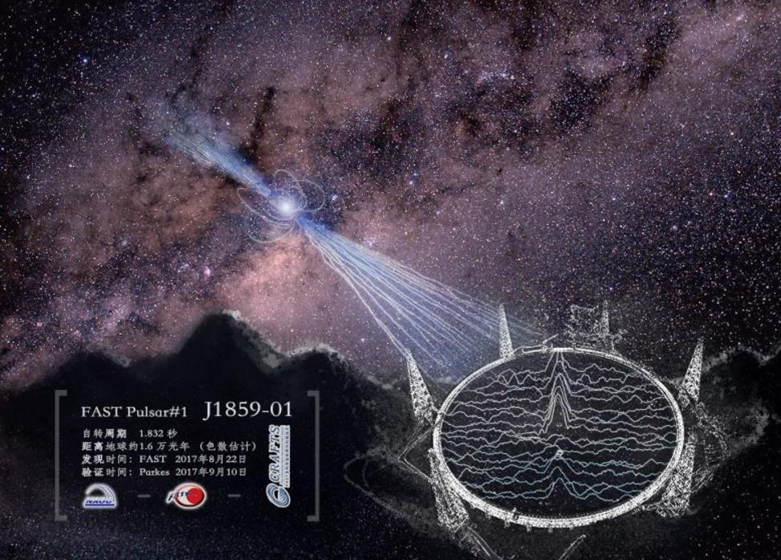

“天眼”之父南仁东眼睛闭上了,中国“天眼”睁开了
南仁东，1968年毕业于清华大学无线电系。他是我国著名天文学家，是国家重大科技基础设施建设项目——“中国天眼”500米口径球面射电望远镜工程（简称FAST）的发起者和奠基人。他主导提出利用我国贵州省喀斯特洼地作为望远镜台址，从论证立项到选址建设历时22年，主持攻克了一系列技术难题，为FAST重大科学工程的顺利落成发挥了关键作用，作出了重要贡献。他不计个人名利得失，长期默默无闻地奉献在科研工作第一线，与全体工程团队一起通过不懈努力，迈过重重难关，实现了中国拥有世界一流水平望远镜的梦想，他别人们称为“中国天眼之父”。2017年9月15日，“天眼之父”南仁东因病逝世。
毕生心血筑“天眼”
1993年，获悉科学家们在日本东京的国际无线电科学联盟大会上提出，要在全球电波环境继续恶化之前，接收更多来自外太空的信息，建造新一代射电“大望远镜”时，南仁东坐不住了，他不能忍受中国在这一领域再被别人甩下，一定要抓住这个赶超的契机。 他提出：“在中国境内建造直径500米、世界最大的单口径射电望远镜。”这是个太大胆的设想，已不仅是一个严密的科学工程，还是一个难度巨大的建设工程，涉及天文学、力学、机械工程、结构工程、电子学、测量与控制工程，甚至岩土工程等各个领域。当时中国最大的射电望远镜口径只有25米，而南老师要建造的是500米口径的射电望远镜。挑战可想而知，很多人认为这根本就不可能。但是南仁东做到了。 谁都没想到，FAST工程就这样成为了南仁东一生中最重要的事，足足花了他一辈子的时间。南仁东的这条逐梦之路，异常艰辛。单为FAST选址，就耗用了他12年的生命。 建设FAST的理想台址是在大山深处、远离电磁干扰的山谷洼地。为了寻找这样合适的台址，南仁东带着300多幅卫星遥感图，几乎走遍了中国西南的所有大山，踏遍了大山里的所有洼地。几十个大大小小的村寨，一些当地农民走着都费劲的山路，一些从未有人踏足的荒野......那里遍布着南仁东的足迹！ 23年时间里，他从壮年走到暮年，把一个朴素的想法变成了国之重器，成就了中国在世界上独一无二的项目。南仁东一生只做一件事，这件事就是建造FSAT。所谓的“FAST”工程，简单的说，其实它的外形就是一口躺在贵州山区里的“巨型锅”，直径将近500米。这口其貌不扬的巨型锅有着“中国天眼”的美誉。这个天眼在中国甚至全球范围内都有着无与伦比的地位。它的灵敏度比德国的Bonn望眼镜高10倍，它的综合性比美国最先进的望眼镜高10倍，通过它我们可以观测到宇宙的边缘。23年，他的身体每况愈下。但是他一生所在执着建造的FSAT慢慢成型了，就像哺育自己孩子的母亲一样，当孩子展翅高飞的时候，母亲已经无力翱翔，他把自己用不完的精力和心血全都放到了FSAT上。
他的眼睛闭上了，但“天眼”睁开了
FAST落成启用仅一年，就捷报频传：FAST已经实现了各种观测模式的验证，调试进展创造了国际同类设备的世界纪录已经探测到数十个优质脉冲星候选体，9颗新脉冲星得到国际认证，实现了中国望远镜发现脉冲星“零”的突破！

如今，FAST已经成为名副其实的大国重器，它将使我国的天文学研究领先世界20年，在中国日益走进世界舞台中央的新时代，为科技创新强国梦增添了浓墨重彩。但这些，南仁东再也看不到了。 他的梦想实现了，就像他诗里写的那样：“美丽的宇宙太空以它的神秘和绚丽，召唤我们踏过平庸，进入它无垠的广袤。”